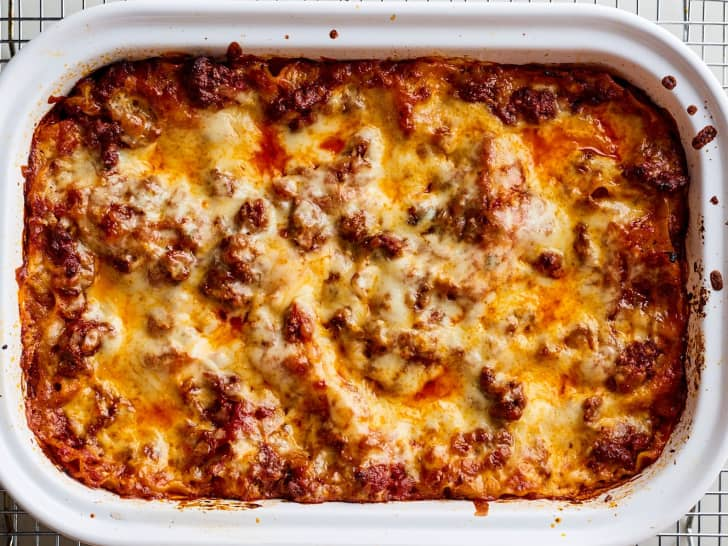

Back home
Lasagna

A little description
When John Chandler submitted this lasagna recipe to Allrecipes more than 20 years ago, he had no idea how successful it would become. One of our top-performing recipes of all time, World's Best Lasagna racks up more than 7 million views per year and has ranked among the most popular lasagna recipes on the internet for two decades. Unfortunately, John unexpectedly passed away at 53 years old — read all about his life and legacy here.
Ingredients
- Meat
- Onion and garlic
- Tomato products
- Sugar
- Spices and seasonings
- Lasagna noodles
- Cheeses
- Egg
Steps
- Make the bolognese. Cook the bolognese and let it simmer until slightly thickened and the flavors meld. Meanwhile, soak the noodles and make the béchamel.
- Soak the noodles. Arrange dried lasagna noodles in a 9×13 baking dish and cover with very hot tap water. It’s helpful to move the noodles around occasionally and separate any stacked noodles so they don’t stick together. When ready, drain the noodles and dry the baking dish.
- Make the béchamel. Simmer the béchamel just until thickened.
- Assemble the lasagna. Spread a thin layer of bolognese in the bottom of the baking dish. Layer with lasagna noodles, bolognese sauce, béchamel sauce, and grated Parmesan. Repeat for a second layer, then top with the remaining noodles, bolognese, béchamel, and Parmesan.
- Bake the lasagna and cool. Bake uncovered until the cheese is melty and the sauce is bubbly. Pop under the broiler for just a couple minutes if you want the cheese browned in spots (keep a close eye on it). Cool at least 15 minutes before slicing and serving.